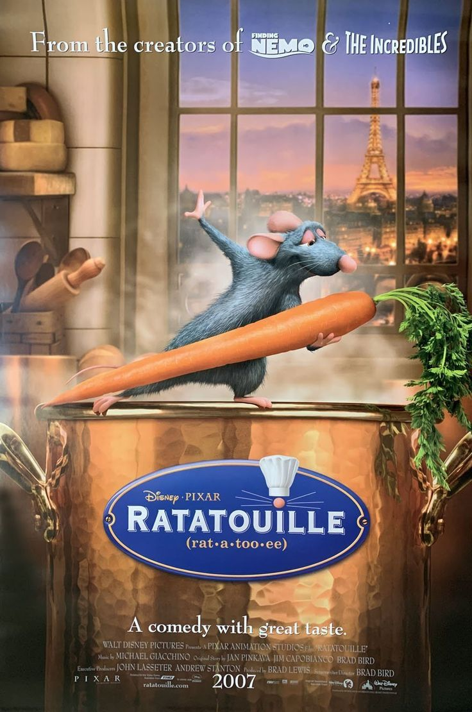

Ratatouille:
Ano de produção: 2007
Dirigido por: Brad Bird.
Duração: 1h 51min.
Classificação: Livre.
Gênero: Animação, Comédia, Família.
País de Origem: Estados Unidos da América.
Sinopse:
Ratatouille, Remy (Patton Oswalt) é apenas um rato de esgoto que sonha em ser mais do que seu pai quer que ele seja. Um dia, inspirado por um programa culinário de um famoso chef francês, Gusteau (Brad Garrett), Remy parte em busco de usar suas novas técnicas culinárias para fazer com que sua família coma comida boa - segundo seu paladar. Porém, em um fatídico dia tentando fazer uma receita mirabolante com seu irmão, ele acaba fazendo com que sua família tenha que se mudar, acabando se separando dela nas redes de esgoto. Por sua sorte, a tubulação o leva a Paris, a cidade da gastronomia - e bem em frente ao restaurante do chef. Entrando no local para realizar um sonho, ele acaba conhecendo Linguine (Lou Romano), filho bastardo do renomado chef que acabou de ser contratado para limpar a cozinha. Em uma ideia mirabolante dos dois, Remy passa a ser o real "cozinheiro" que comanda Linguine embaixo de seu chapéu de chef, usando suas receitas e habilidades culinárias para que o menino reivindique o restaurante como herdeiro.